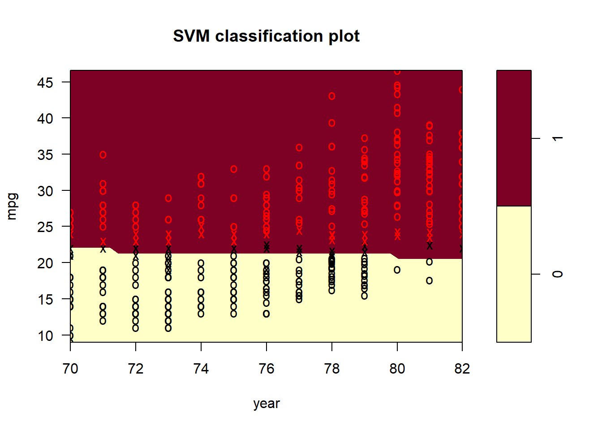
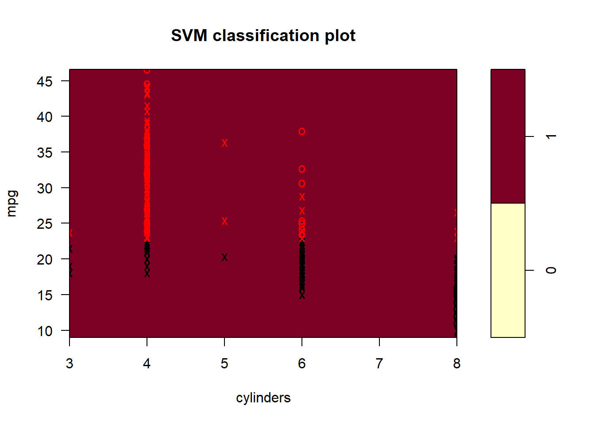

Punto 4
Generar un conjunto de datos simulados de dos clases con 100 observaciones y dos características en las que hay una separación visible pero no lineal entre las dos clases. Muestra que, en este escenario, un vector de apoyo máquina con un núcleo polinómico (con un grado superior a 1) o una El núcleo radial superará al clasificador de vectores de apoyo en la formación datos. ¿Qué técnica funciona mejor con los datos de la prueba? Haga y reportar las tasas de error de entrenamiento y pruebas para respaldar sus afirmaciones.
Conjunto de datos simulados de dos clases con 100 observaciones y dos características en las que hay una separación visible pero no lineal entre las dos clases:
library(e1071)
set.seed(19)
x <- rnorm(100)
y <- 4 * x^2 + 1 + rnorm(100)
class <- sample(100, 50)
y[class] <- y[class] + 3
y[-class] <- y[-class] - 3
plot(x[class], y[class], col = "red", xlab = "X", ylab = "Y", ylim = c(-6, 30))
points(x[-class], y[-class], col = "blue")Se ajusta un modelo clasificador de vector de soporte en los datos obtenidos en el conjunto de entrenamiento:
z <- rep(-1, 100)
z[class] <- 1
data <- data.frame(x = x, y = y, z = as.factor(z))
train <- sample(100, 50)
data.train <- data[train, ]
data.test <- data[-train, ]
svm.linear <- svm(z ~ ., data = data.train, kernel = "linear", cost = 10)
plot(svm.linear, data.train)table(predict = predict(svm.linear, data.train), truth = data.train$z)## truth
## predict -1 1
## -1 16 2
## 1 7 25Se observa que el clasificador de vectores de soporte comete 7 errores en los datos de entrenamiento.
Luego, se procede a ajustar una máquina de vectores de soporte con un núcleo polinomial, se obtiene:
svm.poly <- svm(z ~ ., data = data.train, kernel = "polynomial", cost = 10)
plot(svm.poly, data.train)table(predict = predict(svm.poly, data.train), truth = data.train$z)## truth
## predict -1 1
## -1 16 0
## 1 7 27En este caso, se observa que la máquina de vectores de soporte con un núcleo polinomial de grado 3 comete 7 errores en los datos de entrenamiento.
Finalmente se ajusta una máquina de vectores de soporte con un núcleo radial y una gamma de 1, los resultados son:
svm.radial <- svm(z ~ ., data = data.train, kernel = "radial", gamma = 1, cost = 10)
plot(svm.radial, data.train)table(predict = predict(svm.radial, data.train), truth = data.train$z)## truth
## predict -1 1
## -1 23 0
## 1 0 27Ahora se observa que la máquina de vectores de soporte con un kernel radial comete 0 errores en los datos de entrenamiento.
Entonces se verifica cómo funcionan estos modelos cuando se aplican a los datos de prueba.
plot(svm.linear, data.test)table(predict = predict(svm.linear, data.test), truth = data.test$z)## truth
## predict -1 1
## -1 21 1
## 1 6 22plot(svm.poly, data.test)
table(predict = predict(svm.poly, data.test), truth = data.test$z)## truth
## predict -1 1
## -1 14 0
## 1 13 23plot(svm.radial, data.test)table(predict = predict(svm.radial, data.test), truth = data.test$z)## truth
## predict -1 1
## -1 23 3
## 1 4 20Asi se puede observar que las máquinas de vectores de soporte lineal, polinomial y radial clasifican, respectivamente, 7, 7 y 1 observaciones de forma incorrecta.
Entonces se concluye que el kernel radial es el mejor modelo para esta configuración.
Punto 5
Hemos visto que podemos encajar un SVM con un kernel no lineal para para realizar la clasificación utilizando un límite de decisión no lineal ahora vemos que también podemos obtener un límite de decisión no lineal por realizando una regresión logística utilizando transformaciones no lineales de las características.
(a) Generar un conjunto de datos con n = 500 y p = 2, de manera que las observaciones pertenecen a dos clases con un límite de decisión cuadrático entre ellos. Por ejemplo, puedes hacer esto de la siguiente manera:
x1=runif (500) -0.5 x2=runif (500) -0.5 y=1*(x12-x22 > 0)
set.seed(19)
x1 <- runif(500) - 0.5
x2 <- runif(500) - 0.5
y <- 1 * (x1^2 - x2^2 > 0)(b) Trazar las observaciones, coloreadas según sus etiquetas de clase. Su gráfico debe mostrar X1 en el eje x, y X2 en el eje y.
plot(x1, x2, xlab = "X1", ylab = "X2", col = (4 - y), pch = (3 - y))(c) Ajustar un modelo de regresión logística a los datos, utilizando X1 y X2 como predictores.
logit.fit <- glm(y ~ x1 + x2, family = "binomial")
summary(logit.fit)##
## Call:
## glm(formula = y ~ x1 + x2, family = "binomial")
##
## Deviance Residuals:
## Min 1Q Median 3Q Max
## -1.231 -1.153 -1.098 1.193 1.258
##
## Coefficients:
## Estimate Std. Error z value Pr(>|z|)
## (Intercept) -0.03933 0.08969 -0.439 0.661
## x1 -0.05774 0.30888 -0.187 0.852
## x2 -0.27504 0.30835 -0.892 0.372
##
## (Dispersion parameter for binomial family taken to be 1)
##
## Null deviance: 692.95 on 499 degrees of freedom
## Residual deviance: 692.11 on 497 degrees of freedom
## AIC: 698.11
##
## Number of Fisher Scoring iterations: 3Para el modelo de regresión logística ninguna variable parece ser estadisticamente significativa.
(d) Aplicar este modelo a los datos de capacitación a fin de obtener una predicción etiqueta de clase para cada observación de entrenamiento. Traza las observaciones, de acuerdo con las etiquetas de clase predichas. El límite de decisión debe ser lineal.
data <- data.frame(x1 = x1, x2 = x2, y = y)
probs <- predict(logit.fit, data, type = "response")
preds <- rep(0, 500)
preds[probs > 0.47] <- 1
plot(data[preds == 1, ]$x1, data[preds == 1, ]$x2, col = (4 - 1), pch = (3 - 1), xlab = "X1", ylab = "X2")
points(data[preds == 0, ]$x1, data[preds == 0, ]$x2, col = (4 - 0), pch = (3 - 0))Para este modelo, el limite de decisión parece ser lineal.
(e) Ahora ajuste un modelo de regresión logística a los datos utilizando la técnica no lineal funciones de X1 y X2 como predictores (por ejemplo, X2 1, X1×X2, log(X2), y así sucesivamente).
logitnl.fit <- glm(y ~ poly(x1, 2) + poly(x2, 2) + I(x1 * x2), family = "binomial")## Warning: glm.fit: algorithm did not converge## Warning: glm.fit: fitted probabilities numerically 0 or 1 occurredsummary(logitnl.fit)##
## Call:
## glm(formula = y ~ poly(x1, 2) + poly(x2, 2) + I(x1 * x2), family = "binomial")
##
## Deviance Residuals:
## Min 1Q Median 3Q Max
## -2.067e-03 -2.000e-08 -2.000e-08 2.000e-08 2.786e-03
##
## Coefficients:
## Estimate Std. Error z value Pr(>|z|)
## (Intercept) -33.41 24085.88 -0.001 0.999
## poly(x1, 2)1 -214.97 223082.10 -0.001 0.999
## poly(x1, 2)2 62044.44 1503369.19 0.041 0.967
## poly(x2, 2)1 882.45 231323.93 0.004 0.997
## poly(x2, 2)2 -64366.12 1375165.06 -0.047 0.963
## I(x1 * x2) 698.84 271473.75 0.003 0.998
##
## (Dispersion parameter for binomial family taken to be 1)
##
## Null deviance: 6.9295e+02 on 499 degrees of freedom
## Residual deviance: 1.5404e-05 on 494 degrees of freedom
## AIC: 12
##
## Number of Fisher Scoring iterations: 25Para el modelo de regresión logística utilizando la técnica no lineal nuevamente ninguna variable parece ser estadisticamente significativa.
(f) Aplicar este modelo a los datos de entrenamiento para obtener una predicción etiqueta de clase para cada observación de entrenamiento. Traza las observaciones, de acuerdo con las etiquetas de clase predichas. El límite de decisión debería ser obviamente no lineal. Si no lo es, entonces repita (a)-(e) hasta que llegue a un ejemplo en el que las etiquetas de clase predichas son obviamente no lineales.
probs <- predict(logitnl.fit, data, type = "response")
preds <- rep(0, 500)
preds[probs > 0.47] <- 1
plot(data[preds == 1, ]$x1, data[preds == 1, ]$x2, col = (4 - 1), pch = (3 - 1), xlab = "X1", ylab = "X2")
points(data[preds == 0, ]$x1, data[preds == 0, ]$x2, col = (4 - 0), pch = (3 - 0))Acá se observa que el límite de decisión no lineal es similar al límite de decisión real.
(g) Ajustar un clasificador de vectores de apoyo a los datos con X1 y X2 como predictores. Obtener una predicción de clase para cada observación de entrenamiento. Trazar las observaciones, coloreadas de acuerdo con la predicción etiquetas de clase.
data$y <- as.factor(data$y)
svm.fit <- svm(y ~ x1 + x2, data, kernel = "linear", cost = 0.01)
preds <- predict(svm.fit, data)
plot(data[preds == 0, ]$x1, data[preds == 0, ]$x2, col = (4 - 0), pch = (3 - 0), xlab = "X1", ylab = "X2")
points(data[preds == 1, ]$x1, data[preds == 1, ]$x2, col = (4 - 1), pch = (3 - 1))Luego, ajustando un clasificador de vectores de apoyo a los datos, se observa que clasifica todos los puntos en una sola clase.
(h) Ajustar un SVM usando un kernel no lineal a los datos. Obtener una clase predicción para cada observación de entrenamiento. Traza las observaciones, de acuerdo con las etiquetas de clase predichas.
data$y <- as.factor(data$y)
svmnl.fit <- svm(y ~ x1 + x2, data, kernel = "radial", gamma = 1)
preds <- predict(svmnl.fit, data)
plot(data[preds == 0, ]$x1, data[preds == 0, ]$x2, col = (4 - 0), pch = (3 - 0), xlab = "X1", ylab = "X2")
points(data[preds == 1, ]$x1, data[preds == 1, ]$x2, col = (4 - 1), pch = (3 - 1))Asi nuevamente, se concluye que el límite de decisión no lineal es similar al límite de decisión real.
(i) Comente sus resultados.
Como conclusión general, se puede decir que tanto un SVM usando un kernel no lineal como la regresión logística usando los terminos de interacción parecen ser igual de acertados para encontrar los limites de desición no lineales, a pesar de esto el SVM posee un argumento más a favor y es que requiere ajuste manualpara hallar los terminos de interacción correctos cuando se usa regresión logística, pues solo se necesita hallar gamma.
Punto 6
Al final de la sección 9.6.1, se afirma que en el caso de los datos que es apenas linealmente separable, un clasificador de vectores de apoyo con un pequeño valor de costo que clasifica erróneamente un par de observaciones de entrenamiento puede tener un mejor rendimiento en los datos de las pruebas que uno con un enorme valor de costo que no clasifica erróneamente ninguna observación de entrenamiento. Ahora investigue esta demanda.
(a) Generar datos de dos clases con p = 2 de tal manera que las clases son apenas linealmente separables.
El primer paso es generar 1000 puntos de manera dispersa a través de la linea x=y con una margen amplia. Adicionalemnte se hace la creación de “noisy points” a lo largo de la linea 5x − 4y − 50 = 0, la función de estos puntos es hacer las clases apenas separables, además de cambiar el clasificador de margen máximo.
set.seed(19)
x.one <- runif(500, 0, 90)
y.one <- runif(500, x.one + 10, 100)
x.one.noise <- runif(50, 20, 80)
y.one.noise <- 5/4 * (x.one.noise - 10) + 0.1
x.zero <- runif(500, 10, 100)
y.zero <- runif(500, 0, x.zero - 10)
x.zero.noise <- runif(50, 20, 80)
y.zero.noise <- 5/4 * (x.zero.noise - 10) - 0.1
class.one <- seq(1, 550)
x <- c(x.one, x.one.noise, x.zero, x.zero.noise)
y <- c(y.one, y.one.noise, y.zero, y.zero.noise)
plot(x[class.one], y[class.one], col = "blue", pch = "+", ylim = c(0, 100))
points(x[-class.one], y[-class.one], col = "red", pch = 4)(b) Calcular las tasas de error de validación cruzada para el vector de apoyo clasificadores con un rango de valores de costo. ¿Cuántos errores de entrenamiento se clasifican erróneamente para cada valor de costo considerado, y cómo se relaciona esto con los errores de validación cruzada obtenidos?
set.seed(192)
z <- rep(0, 1100)
z[class.one] <- 1
data <- data.frame(x = x, y = y, z = as.factor(z))
tune.out <- tune(svm, z ~ ., data = data, kernel = "linear", ranges = list(cost = c(0.01, 0.1, 1, 5, 10, 100, 1000, 10000)))
summary(tune.out)##
## Parameter tuning of 'svm':
##
## - sampling method: 10-fold cross validation
##
## - best parameters:
## cost
## 10000
##
## - best performance: 0
##
## - Detailed performance results:
## cost error dispersion
## 1 1e-02 0.07000000 0.03150641
## 2 1e-01 0.05636364 0.02259558
## 3 1e+00 0.05636364 0.02259558
## 4 5e+00 0.05636364 0.02259558
## 5 1e+01 0.05636364 0.02259558
## 6 1e+02 0.05454545 0.02185183
## 7 1e+03 0.01545455 0.01289215
## 8 1e+04 0.00000000 0.00000000Se observa que un costo de 10000 parece ser la mejor opción para el parámetro.
data.frame(cost = tune.out$performance$cost, misclass = tune.out$performance$error * 1100)## cost misclass
## 1 1e-02 77
## 2 1e-01 62
## 3 1e+00 62
## 4 5e+00 62
## 5 1e+01 62
## 6 1e+02 60
## 7 1e+03 17
## 8 1e+04 0Lo obtenido confirma que un costo de 10000 clasifica todos los puntos de entrenamiento de manera correcta.
(c) Generar un conjunto de datos de prueba apropiado, y calcular la prueba errores correspondientes a cada uno de los valores de costo considerados. ¿Qué valor de coste conduce a la menor cantidad de errores de prueba, y cómo ¿se compara esto con los valores de costo que producen menos errores de entrenamiento y la menor cantidad de errores de validación cruzada?
x.test <- runif(1000, 0, 100)
class.one <- sample(1000, 500)
y.test <- rep(NA, 1000)
# Set y > x for class.one
for (i in class.one) {
y.test[i] <- runif(1, x.test[i], 100)
}
# set y < x for class.zero
for (i in setdiff(1:1000, class.one)) {
y.test[i] <- runif(1, 0, x.test[i])
}
plot(x.test[class.one], y.test[class.one], col = "blue", pch = "+")
points(x.test[-class.one], y.test[-class.one], col = "red", pch = 4)set.seed(193)
z.test <- rep(0, 1000)
z.test[class.one] <- 1
data.test <- data.frame(x = x.test, y = y.test, z = as.factor(z.test))
costs <- c(0.01, 0.1, 1, 5, 10, 100, 1000, 10000)
test.err <- rep(NA, length(costs))
for (i in 1:length(costs)) {
svm.fit <- svm(z ~ ., data = data, kernel = "linear", cost = costs[i])
pred <- predict(svm.fit, data.test)
test.err[i] <- sum(pred != data.test$z)
}
data.frame(cost = costs, misclass = test.err)## cost misclass
## 1 1e-02 59
## 2 1e-01 15
## 3 1e+00 2
## 4 5e+00 6
## 5 1e+01 24
## 6 1e+02 162
## 7 1e+03 172
## 8 1e+04 171Finalmente se puede concluir que los costos 1 y 5 parecen funcionar mejor en las observaciones de prueba, esto es mucho menor que el valor de 10000 para las observaciones de entrenamiento.
(d) Discuta sus resultados.
En este caso se esta observando un sobreajuste en los datos para el kernel lineal, pues un valor alto asociado al costo intenta clasificar de manera correcta los “noisy-points” y por esto se evidencia un sobreajuste. Sin embargo, un valor bajo asociado al costo arroja errores en los “noisy-points” y hace que estos funcionen mejor en los datos de prueba.
Punto 7
En este problema, se utilizarán los enfoques de los vectores de apoyo a fin de predecir si un coche determinado tiene un alto o bajo kilometraje de gasolina basado en la Conjunto de datos automático.
(a) Crear una variable binaria que toma un 1 para los coches con gasolina el kilometraje por encima de la mediana, y un 0 para los coches con kilometraje de gasolina por debajo de la media.
library(ISLR)## Warning: package 'ISLR' was built under R version 3.6.3var <- ifelse(Auto$mpg > median(Auto$mpg), 1, 0)
Auto$mpglevel <- as.factor(var)(b) Ajustar un clasificador de vectores de apoyo a los datos con diversos valores del costo, para predecir si un coche tiene alta o baja gasolina kilometraje. Reporte los errores de validación cruzada asociados con diferentes valores de este parámetro. Comente sus resultados.
set.seed(19)
tune.out <- tune(svm, mpglevel ~ ., data = Auto, kernel = "linear", ranges = list(cost = c(0.01, 0.1, 1, 5, 10, 100, 1000)))
summary(tune.out)##
## Parameter tuning of 'svm':
##
## - sampling method: 10-fold cross validation
##
## - best parameters:
## cost
## 1
##
## - best performance: 0.01282051
##
## - Detailed performance results:
## cost error dispersion
## 1 1e-02 0.07391026 0.04885837
## 2 1e-01 0.04589744 0.04639479
## 3 1e+00 0.01282051 0.01813094
## 4 5e+00 0.01532051 0.01788871
## 5 1e+01 0.01532051 0.01788871
## 6 1e+02 0.03057692 0.02010376
## 7 1e+03 0.03057692 0.02010376De lo anterior, el costo 1 parecer ser el que mejor funcione.
(c) Ahora repita (b), esta vez usando SVM con radial y polinomio con diferentes valores de gamma y grado y costo. Comente sus resultados.
set.seed(19)
tune.out <- tune(svm, mpglevel ~ ., data = Auto, kernel = "polynomial", ranges = list(cost = c(0.01, 0.1, 1, 5, 10, 100), degree = c(2, 3, 4)))
summary(tune.out)##
## Parameter tuning of 'svm':
##
## - sampling method: 10-fold cross validation
##
## - best parameters:
## cost degree
## 100 2
##
## - best performance: 0.2882692
##
## - Detailed performance results:
## cost degree error dispersion
## 1 1e-02 2 0.5307692 0.03105870
## 2 1e-01 2 0.5307692 0.03105870
## 3 1e+00 2 0.5307692 0.03105870
## 4 5e+00 2 0.5307692 0.03105870
## 5 1e+01 2 0.5257051 0.07186762
## 6 1e+02 2 0.2882692 0.07634161
## 7 1e-02 3 0.5257692 0.04595736
## 8 1e-01 3 0.5257692 0.04595736
## 9 1e+00 3 0.5257692 0.04595736
## 10 5e+00 3 0.5257692 0.04595736
## 11 1e+01 3 0.5257692 0.04595736
## 12 1e+02 3 0.3392308 0.06240838
## 13 1e-02 4 0.5332692 0.02405047
## 14 1e-01 4 0.5332692 0.02405047
## 15 1e+00 4 0.5332692 0.02405047
## 16 5e+00 4 0.5332692 0.02405047
## 17 1e+01 4 0.5332692 0.02405047
## 18 1e+02 4 0.5332692 0.02405047Acá se oberva que para un kernel polinomial, el error de validación cruzada más bajo se obtiene para un grado de 2 y un costo de 100.
set.seed(19)
tune.out <- tune(svm, mpglevel ~ ., data = Auto, kernel = "radial", ranges = list(cost = c(0.01, 0.1, 1, 5, 10, 100), gamma = c(0.01, 0.1, 1, 5, 10, 100)))
summary(tune.out)##
## Parameter tuning of 'svm':
##
## - sampling method: 10-fold cross validation
##
## - best parameters:
## cost gamma
## 100 0.01
##
## - best performance: 0.01282051
##
## - Detailed performance results:
## cost gamma error dispersion
## 1 1e-02 1e-02 0.49826923 0.13175916
## 2 1e-01 1e-02 0.09173077 0.04357345
## 3 1e+00 1e-02 0.07391026 0.04885837
## 4 5e+00 1e-02 0.04846154 0.04585631
## 5 1e+01 1e-02 0.02814103 0.03299805
## 6 1e+02 1e-02 0.01282051 0.01351401
## 7 1e-02 1e-01 0.16576923 0.08517481
## 8 1e-01 1e-01 0.07641026 0.04955496
## 9 1e+00 1e-01 0.05858974 0.04665778
## 10 5e+00 1e-01 0.03820513 0.03232674
## 11 1e+01 1e-01 0.03564103 0.02727721
## 12 1e+02 1e-01 0.03307692 0.02087291
## 13 1e-02 1e+00 0.49076923 0.15538382
## 14 1e-01 1e+00 0.49076923 0.15538382
## 15 1e+00 1e+00 0.06115385 0.04699223
## 16 5e+00 1e+00 0.06358974 0.04828568
## 17 1e+01 1e+00 0.06358974 0.04828568
## 18 1e+02 1e+00 0.06358974 0.04828568
## 19 1e-02 5e+00 0.52826923 0.03841694
## 20 1e-01 5e+00 0.52826923 0.03841694
## 21 1e+00 5e+00 0.48737179 0.03984690
## 22 5e+00 5e+00 0.48737179 0.03984690
## 23 1e+01 5e+00 0.48737179 0.03984690
## 24 1e+02 5e+00 0.48737179 0.03984690
## 25 1e-02 1e+01 0.53326923 0.02405047
## 26 1e-01 1e+01 0.53326923 0.02405047
## 27 1e+00 1e+01 0.50519231 0.03620953
## 28 5e+00 1e+01 0.50512821 0.03332785
## 29 1e+01 1e+01 0.50512821 0.03332785
## 30 1e+02 1e+01 0.50512821 0.03332785
## 31 1e-02 1e+02 0.53576923 0.01781031
## 32 1e-01 1e+02 0.53576923 0.01781031
## 33 1e+00 1e+02 0.53576923 0.01781031
## 34 5e+00 1e+02 0.53576923 0.01781031
## 35 1e+01 1e+02 0.53576923 0.01781031
## 36 1e+02 1e+02 0.53576923 0.01781031Y acá se observaque para un kernel radial, el error de validación cruzada más bajo se obtiene para una gamma de 0.01 y un costo de 100.
(d) Haga algunas tramas para respaldar sus afirmaciones en (b) y (c). Sugerencia: En el laboratorio, usamos la función plot() para los objetos svm sólo en los casos con p = 2. Cuando p > 2, puedes usar la gráfica() para crear gráficos que muestren pares de variables a la vez. Esencialmente, en lugar de escribir.
svm.linear <- svm(mpglevel ~ ., data = Auto, kernel = "linear", cost = 1)
svm.poly <- svm(mpglevel ~ ., data = Auto, kernel = "polynomial", cost = 100, degree = 2)
svm.radial <- svm(mpglevel ~ ., data = Auto, kernel = "radial", cost = 100, gamma = 0.01)
plotpairs = function(fit) {
for (name in names(Auto)[!(names(Auto) %in% c("mpg", "mpglevel", "name"))]) {
plot(fit, Auto, as.formula(paste("mpg~", name, sep = "")))
}
}
plotpairs(svm.linear)
plotpairs(svm.poly)
plotpairs(svm.radial)Punto 8
Este problema involucra el conjunto de datos del OJ que es parte del ISLR paquete.
(a) Cree un conjunto de entrenamiento que contenga una muestra aleatoria de 800 observaciones y un conjunto de prueba que contenga las observaciones restantes.
set.seed(19)
train <- sample(nrow(OJ), 800)
OJ.train <- OJ[train, ]
OJ.test <- OJ[-train, ](b) Ajuste un clasificador de vector de soporte a los datos de entrenamiento usando cost = 0.01, con Purchase como respuesta y las otras variables como predictores. Use la función summary() para generar estadísticas resumidas y describir los resultados obtenidos.
svm.linear <- svm(Purchase ~ ., data = OJ.train, kernel = "linear", cost = 0.01)
summary(svm.linear)##
## Call:
## svm(formula = Purchase ~ ., data = OJ.train, kernel = "linear",
## cost = 0.01)
##
##
## Parameters:
## SVM-Type: C-classification
## SVM-Kernel: linear
## cost: 0.01
##
## Number of Support Vectors: 443
##
## ( 221 222 )
##
##
## Number of Classes: 2
##
## Levels:
## CH MMAl ajustar un clasificador de vector de soporte para los datos de entrenamiento, se observa que este crea 443 vectores de soporte de 800 puntos de entrenamiento. De estos, 222 pertenecen al nivel MM y los 221 restantes pertenecen al nivel CH.
(c) ¿Cuáles son las tasas de error de entrenamiento y prueba?
train.pred <- predict(svm.linear, OJ.train)
table(OJ.train$Purchase, train.pred)## train.pred
## CH MM
## CH 429 53
## MM 86 232(78 + 55) / (439 + 228 + 78 + 55)## [1] 0.16625test.pred <- predict(svm.linear, OJ.test)
table(OJ.test$Purchase, test.pred)## test.pred
## CH MM
## CH 145 26
## MM 22 77(31 + 18) / (141 + 80 + 31 + 18)## [1] 0.1814815La tase de error para el conjunto de entrenamiento es de aproximadamente 16.6%
La tasa de error para el conjunto de prueba es de aproximadamente 18.1%.
(d) Use la función tune() para seleccionar un costo óptimo. Considere valores en el rango de 0.01 a 10.
set.seed(192)
tune.out <- tune(svm, Purchase ~ ., data = OJ.train, kernel = "linear", ranges = list(cost = 10^seq(-2, 1, by = 0.25)))
summary(tune.out)##
## Parameter tuning of 'svm':
##
## - sampling method: 10-fold cross validation
##
## - best parameters:
## cost
## 0.05623413
##
## - best performance: 0.17
##
## - Detailed performance results:
## cost error dispersion
## 1 0.01000000 0.17750 0.04632314
## 2 0.01778279 0.17375 0.04348132
## 3 0.03162278 0.17375 0.04348132
## 4 0.05623413 0.17000 0.04174992
## 5 0.10000000 0.17000 0.04257347
## 6 0.17782794 0.17125 0.04411554
## 7 0.31622777 0.17125 0.04372023
## 8 0.56234133 0.17000 0.04338138
## 9 1.00000000 0.17125 0.04372023
## 10 1.77827941 0.17000 0.04533824
## 11 3.16227766 0.17000 0.04456581
## 12 5.62341325 0.17000 0.04571956
## 13 10.00000000 0.17000 0.04571956En este caso, se obtiene que el costo óptimo que se encuentra entre los valores 0.01 y 10 es 0.056.
(e) Calcule las tasas de error de capacitación y prueba utilizando este nuevo valor de costo.
svm.linear <- svm(Purchase ~ ., kernel = "linear", data = OJ.train, cost = tune.out$best.parameter$cost)
train.pred <- predict(svm.linear, OJ.train)
table(OJ.train$Purchase, train.pred)## train.pred
## CH MM
## CH 427 55
## MM 78 240(71 + 56) / (438 + 235 + 71 + 56)## [1] 0.15875test.pred <- predict(svm.linear, OJ.test)
table(OJ.test$Purchase, test.pred)## test.pred
## CH MM
## CH 145 26
## MM 20 79(32 + 19) / (140 + 79 + 32 + 19)## [1] 0.1888889Utilizando el nuevo valor del costo optimo se obtiene que:
La tase de error para el conjunto de entrenamiento es de aproximadamente 15.9%
La tasa de error para el conjunto de prueba es de aproximadamente 18.9%.
(f) Repita las partes (b) a (e) usando una máquina de vectores de soporte con un núcleo radial. Use el valor predeterminado para gamma.
svm.radial <- svm(Purchase ~ ., kernel = "radial", data = OJ.train)
summary(svm.radial)##
## Call:
## svm(formula = Purchase ~ ., data = OJ.train, kernel = "radial")
##
##
## Parameters:
## SVM-Type: C-classification
## SVM-Kernel: radial
## cost: 1
##
## Number of Support Vectors: 384
##
## ( 188 196 )
##
##
## Number of Classes: 2
##
## Levels:
## CH MMtrain.pred <- predict(svm.radial, OJ.train)
table(OJ.train$Purchase, train.pred)## train.pred
## CH MM
## CH 441 41
## MM 80 238(77 + 39) / (455 + 229 + 77 + 39)## [1] 0.145test.pred <- predict(svm.radial, OJ.test)
table(OJ.test$Purchase, test.pred)## test.pred
## CH MM
## CH 155 16
## MM 25 74(28 + 18) / (141 + 83 + 28 + 18)## [1] 0.1703704Ahora, usando un kernel radial con gamma predeterminado se obtiene un vector que crea 384 vectores de soporte, de los cuales 188 pertenecen al nivel CH y los 196 restantes pertenecen al nivel MM.
El clasificador tiene un error de entrenamiento del 14,5% y un error de prueba del 17%, que es una ligera mejora con respecto al kernel lineal. Ahora usamos validación cruzada para encontrar el costo óptimo.
set.seed(192)
tune.out <- tune(svm, Purchase ~ ., data = OJ.train, kernel = "radial", ranges = list(cost = 10^seq(-2,
1, by = 0.25)))
summary(tune.out)##
## Parameter tuning of 'svm':
##
## - sampling method: 10-fold cross validation
##
## - best parameters:
## cost
## 1
##
## - best performance: 0.17125
##
## - Detailed performance results:
## cost error dispersion
## 1 0.01000000 0.39750 0.06503204
## 2 0.01778279 0.39750 0.06503204
## 3 0.03162278 0.34250 0.08998457
## 4 0.05623413 0.21250 0.04330127
## 5 0.10000000 0.19875 0.04267529
## 6 0.17782794 0.18625 0.03606033
## 7 0.31622777 0.18000 0.03872983
## 8 0.56234133 0.17375 0.03251602
## 9 1.00000000 0.17125 0.02703521
## 10 1.77827941 0.17625 0.02791978
## 11 3.16227766 0.18000 0.02513851
## 12 5.62341325 0.18125 0.01886539
## 13 10.00000000 0.17875 0.01958777svm.radial <- svm(Purchase ~ ., kernel = "radial", data = OJ.train, cost = tune.out$best.parameter$cost)
summary(svm.radial)##
## Call:
## svm(formula = Purchase ~ ., data = OJ.train, kernel = "radial",
## cost = tune.out$best.parameter$cost)
##
##
## Parameters:
## SVM-Type: C-classification
## SVM-Kernel: radial
## cost: 1
##
## Number of Support Vectors: 384
##
## ( 188 196 )
##
##
## Number of Classes: 2
##
## Levels:
## CH MMtrain.pred <- predict(svm.radial, OJ.train)
table(OJ.train$Purchase, train.pred)## train.pred
## CH MM
## CH 441 41
## MM 80 238(77 + 39) / (455 + 229 + 77 + 39)## [1] 0.145test.pred <- predict(svm.radial, OJ.test)
table(OJ.test$Purchase, test.pred)## test.pred
## CH MM
## CH 155 16
## MM 25 74(28 + 18) / (141 + 83 + 28 + 18)## [1] 0.1703704Entonces, se observa que el ajuste no reduce las tasas de error de entrenamiento y prueba, ya que se está usando el costo óptimo de 1.
(g) Repita las partes (b) a (e) usando una máquina de vectores de soporte con un kernel polinomial. Use degree=2
svm.poly <- svm(Purchase ~ ., kernel = "polynomial", data = OJ.train, degree = 2)
summary(svm.poly)##
## Call:
## svm(formula = Purchase ~ ., data = OJ.train, kernel = "polynomial",
## degree = 2)
##
##
## Parameters:
## SVM-Type: C-classification
## SVM-Kernel: polynomial
## cost: 1
## degree: 2
## coef.0: 0
##
## Number of Support Vectors: 463
##
## ( 224 239 )
##
##
## Number of Classes: 2
##
## Levels:
## CH MMtrain.pred <- predict(svm.poly, OJ.train)
table(OJ.train$Purchase, train.pred)## train.pred
## CH MM
## CH 447 35
## MM 107 211(105 + 33) / (461 + 201 + 105 + 33)## [1] 0.1725test.pred <- predict(svm.poly, OJ.test)
table(OJ.test$Purchase, test.pred)## test.pred
## CH MM
## CH 158 13
## MM 34 65(41 + 10) / (149 + 70 + 41 + 10)## [1] 0.1888889Ahora, usando un kernel radial con gamma predeterminado se obtiene un vector que crea 463 vectores de soporte, de los cuales, 224 afectados al nivel CH y los 239 restantes al nivel MM.
El clasificador tiene un error de entrenamiento del 17.2% y un error de prueba del 18.8%, lo que no mejora el kernel lineal. Ahora usamos validación cruzada para encontrar el costo óptimo.
set.seed(192)
tune.out <- tune(svm, Purchase ~ ., data = OJ.train, kernel = "polynomial", degree = 2, ranges = list(cost = 10^seq(-2,
1, by = 0.25)))
summary(tune.out)##
## Parameter tuning of 'svm':
##
## - sampling method: 10-fold cross validation
##
## - best parameters:
## cost
## 10
##
## - best performance: 0.18
##
## - Detailed performance results:
## cost error dispersion
## 1 0.01000000 0.39875 0.06678375
## 2 0.01778279 0.37250 0.05583955
## 3 0.03162278 0.36375 0.05787019
## 4 0.05623413 0.33250 0.05277047
## 5 0.10000000 0.32625 0.05185785
## 6 0.17782794 0.26750 0.04005205
## 7 0.31622777 0.22000 0.03291403
## 8 0.56234133 0.20750 0.03641962
## 9 1.00000000 0.20375 0.03586723
## 10 1.77827941 0.20125 0.04581439
## 11 3.16227766 0.19500 0.03016160
## 12 5.62341325 0.18375 0.03488573
## 13 10.00000000 0.18000 0.03736085svm.poly <- svm(Purchase ~ ., kernel = "polynomial", degree = 2, data = OJ.train, cost = tune.out$best.parameter$cost)
summary(svm.poly)##
## Call:
## svm(formula = Purchase ~ ., data = OJ.train, kernel = "polynomial",
## degree = 2, cost = tune.out$best.parameter$cost)
##
##
## Parameters:
## SVM-Type: C-classification
## SVM-Kernel: polynomial
## cost: 10
## degree: 2
## coef.0: 0
##
## Number of Support Vectors: 352
##
## ( 175 177 )
##
##
## Number of Classes: 2
##
## Levels:
## CH MMtrain.pred <- predict(svm.poly, OJ.train)
table(OJ.train$Purchase, train.pred)## train.pred
## CH MM
## CH 439 43
## MM 76 242(72 + 44) / (450 + 234 + 72 + 44)## [1] 0.145test.pred <- predict(svm.poly, OJ.test)
table(OJ.test$Purchase, test.pred)## test.pred
## CH MM
## CH 154 17
## MM 26 73(31 + 19) / (140 + 80 + 31 + 19)## [1] 0.1851852Finalmente, se tiene que el ajuste reduce las tasas de error tanto el conjunto de entrenamiento, como del conjunto de prueba.
(h) En general, ¿qué enfoque parece dar los mejores resultados con estos datos?
En general, el kernel de base radial parece estar produciendo un error mínimo de clasificación errónea en los datos de entrenamiento y de prueba.